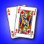

Blackjack Lite
(Casino Style Blackjack)

Category: Games Subgenre: Card & Casino Current Version: 1.3
Download
Detailed description
Blackjack Lite provides casino style Blackjack game play with cool animations. The Lite version is free and supports the following default options.
• Double down
• Split up to five times
• Six decks
• Customizable table, card display options
• Tracking player’s money
• Player can re buy after exhausting all current play money
• Gesture support (Horizontal and Vertical swipes for indicating stand and hit)
If you prefer highly customizable game play options with no advertisements, please try our paid version Blackjack Ultimate which supports two hand play and other customizable game play options like number of decks, minimum bet, draw single or multiple cards on double down, dealer hits or stays on soft, split once or multiple times.
Version Updates
Version 1.3 of Blackjack Lite has the following bug fixes
• Dealer is stopping at 16 in some scenarios. It has been fixed so that dealer always hits when the dealer card count is 16 or less.
• Minor UI tweak.
Version 1.2 has the following
• Added gesture support. Now you use horizontal swipe to indicate stand or a vertical swipe to indicate a hit.
Version 1.1 has the following
• Version 1.0 packaging has issues due to third party tool optimizations. Due to that the animations are blurry and the dealer card not showing up. Fixed those issues.